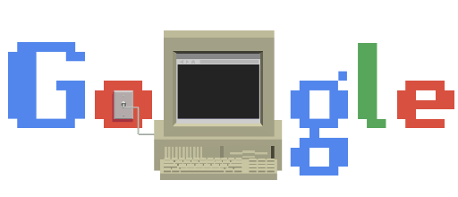

Origen de las redes informáticas La primera red informática surgió en la Guerra Fría Arpanet fue creada durante la cortina de hierro, y su objetivo principal era que la información militar de los Estados Unidos no estuviera centralizada y pudiera estar disponible en punto del país ante un eventual ataque ruso. En 1983, Paul Mockapetris y Jon Postel crearon el sistema de nombres de dominio (DNS) y las denominaciones .com, .org, y .gov, tan características de lo que hoy llamamos Internet. A partir de la década de 1960 y durante las décadas de 1970, 1980 y 1990, el Departamento de Defensa de Estados Unidos (DoD) desarrolló redes de área amplia (WAN) de gran extensión y alta confiabilidad, para uso militar y científico. Esta tecnología era diferente de la comunicación punto-a-punto usada por los tableros de boletín. Permitía la internet working de varios computadores mediante diferentes rutas. La WAN del DoD finalmente se convirtió en la Internet. |
 |
|---|